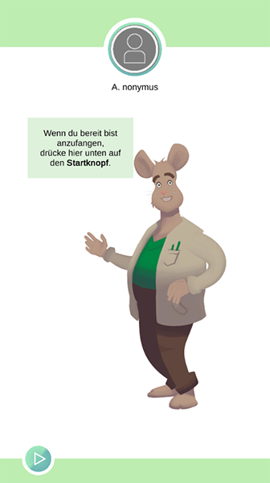

Anwendungsübersicht
For the English version down below, please click here.
Hier gibt es eine Erklärung der verschiedenen UI-Screens von incluMOVE und deren Funktion.
Idle Screen

Das System startet in den Idle Screen. Wird ein USB-Stick eingesteckt, bzw. ist die Nutzung ausgestellt wird entweder auf den Registrierungsscreen oder auf den Begrüßungsscreen weitergeleitet. Nach Beendigung einer Arbeitssession wird wieder auf den Idle Screen zurückgeleitet.
Registrierungsscreen

Neue Nutzer werden zur Wahl eines Nutzernamens aufgefordert. In der Mitte ist der Livefeed einer angeschlossenen Webcam zu sehen. Kann die Webcam nicht geladen werden, wird ein Platzhalter verwendet. Nach Bestätigung wird das Bild als Profilbild des Nutzers festgelegt und auf den Begrüßungsscreen weitergeleitet.
Begrüßungs Screen

Bei der Begrüßung werden die vom Nutzer gewählten Belohnungsanimationen abgespielt. Danach wird der Nutzer durch Gregor begrüßt. Durch Drücken auf den Startknopf kann der Nutzer nun den freigeschalteten Workflow starten.
Workflow Screen
Die Workflowansicht ist die Arbeitsansicht der incluMOVE Software.

 Durchgangszähler
Durchgangszähler
Hier werden die bsiher fertig abgeschlossenen Montagedurchgänge angezeigt.
 Abzeichen
Abzeichen
Hier werden der Reihe nach die verschiedenen vom Nutzer bisher erreichten Abzeichen für Stückzahlen, Turbodurchläufe und Montageserien angezeigt.
 Zeitleiste
Zeitleiste
Hier wird der bisherige Fortschritt, unterteilt in die verschiedenen Arbeitsschritte, angezeigt. Je nach verstrichener Zeit und Orientierungszeit des einzelnen Arbeitsschrittes verfärbt sich die Zeitleiste.
 Chatoberfläche
Chatoberfläche
Über den Chatbot erhält der Nutzer Infos zum aktuellen Arbeitsschritt, Feedback und Ermutigung.
 Pausenknopf
Pausenknopf
Der Pausenknopf hält den Zeitfortschritt an und leitet auf den Pausenbildschirm weiter.
 Arbeitsfläche
Arbeitsfläche
Der restliche Teil der Projektionsfläche ist Arbeitsfläche und wird mittels individualisierbarer Projektionselemente angereichert um z. B. einzelne Bauteile, Montagepositionen, etc. zu markieren. Klickt der Nutzer hier mit der linken Maustaste wird einen Schritt weiter geschaltet. Klickt er mit der rechten Maustaste wird zurück geschaltet. In incluMOVE Extended ist das manuelle Weiterschalten deaktiviert.
Pausen Screen

Editor
Ist der angemeldete Nutzer ein Administrator wird über diesen Button in den Workflow Editor gewechselt. Andernfalls ist der Button ausgeblendet.
Meilensteine
Über diesen Button wird die Meilensteinübersicht geöffnet.
Abzeichenzusammenfassung
Hier werden die bisher erreichten Abzeichen genauer aufgeschlüsselt.
Abzeichenzusammenfassung
Hier wird der genaue Fortschritt zu den nächsten Abzeichen angezeigt.
Arbeitsverlauf
Sofern der Nutzer bereits am System gearbeitet hat werden hier die letzten Arbeitssessions angezeigt. Jede Arbeitssession zeigt den Gesamtwert an gesammelten Abzeichen.
Workflowsteuerung
Hier kann entweder die Arbeit fortgesetzt oder die Arbeitssession beendet werden.
Meilensteinscreen


Auf dem Meilensteinscreen kann der Nutzer sehen welche Meilensteine er bereits freigeschaltet hat und welche Belohnungen die Meilensteine freischalten.
Review Screen
Im Review Screen wird eine Zusammenfassung der Arbeitssession dargestellt.


Im Anschluss an die Übersicht kann der Nutzer seine Belohnung wählen und wird nach Speichern des Profils abgemeldet.
Das System leitet im Anschluss weiter auf den Idle Screen.
Workflow Editor
Der Workflow Editor ermöglicht das Editieren der vorhandenen Workflows.

Workflow Managment
Hier kann von links nach rechts
- ein neuer Workflow angelegt werden
- der aktuelle Workflow abgespeichert werden
- ein Workflow geöffnet werden
- der Editor verlassen werden
Neuer Arbeitsschritt
Hiermit kann ein neuer Arbeitsschritt hinzugefügt werden.
Schrittliste
Hier werden alle Arbeitsschritte in ihrer Ablaufreihenfolge angezeigt. Mit dem Klick auf einen Arbeitsschritt werden alle seine Inhalte auf der Projektionsfläche angezeigt. Auf dem Schritt selbst können die verschiedenen Eigenschaften bearbeitet werden:
- Schrittname
Die Bezeichnung des Montageschrittes. - Schrittdauer
Bestimmt die Orientierungsdauer des jeweiligen Arbeitsschrittes für minimales Hilfslevel, normales Hilfslevel und maximales Hilfslevel. - Einheitliche Dauer
Benutzt die gleiche Dauer für alle Hilfslevel. - Wiederholungen
Menge der Wiederholungen für diesen Schritt.
Schritte werden in Serie wiederholt. Bei aufeinanderfolgenden Schritten mit der gleichen Anzahl an Wiederholungen
werden alle dieser Schritte bis zum letzten Schritt ausgeführt und dann wieder von vorne begonnen.
Bsp.:
Schritt 1 und 2 haben 0 Wiederholungen.
Schritt 3, 4 und 5 haben 2 Wiederholungen.
Schritt 6 und 7 haben wieder 0 Wiederholungen.
Die Schritte werden also in folgender Abfolge ausgeführt:
1 - 2 - 3 - 4 - 5 - 3 - 4 - 5 - 3 - 4 - 5 - 6 - 7
- Zeitschritt/Kameraschritt
Ein Zeitschritt ist ein Schritt, der nach Ablauf der Orientierungsdauer automatisch beendet wird. Ein Kamerschritt kann in Verwendung mit einer externen Kamerasoftware verwendet werden, die die QC_PASSED Netzwerknachricht für eine Montage-ID an die Software schickt. Dieses Softwarefeature muss entsprechend von der Kamersoftware implementiert werden.

Application overview
Here is an explanation of the different UI screens of incluMOVE and their function.
Idle Screen
The system starts in the idle screen. If a USB stick is inserted or if the use of the USB stick is switched off, the system forwards either to the registration screen or to the welcome screen. After the end of a working session, the system is redirected back to the idle screen.
Registration Screen
New users are prompted to choose a username. In the middle you can see the live feed of a connected webcam. If the webcam cannot be loaded, a placeholder is used. After confirmation, the picture is set as the user's profile picture and the user is forwarded to the welcome screen.
Welcome Screen
During the greeting, the reward animations selected by the user are played. Then the user is greeted by Gregor. By pressing the start button, the user can now start the unlocked workflow.
Workflow Screen
The workflow screen is the working view of the incluMOVE software.
Passage counter
The completed assembly passes are displayed here.
Badges
The various badges achieved by the user for quantities, turbo runs and assembly series are displayed here in sequence.
Timeline
The progress to date is displayed here, subdivided into the various work steps. The time bar changes colour depending on the time that has passed and the orientation time of the individual work step.
Chat interface
Via the chatbot, the user receives information on the current work step, feedback and encouragement.
Pause button
The break button stops the time progress and forwards to the break screen.
Work surface
The remaining part of the projection surface is the working surface and it is enriched with customisable projection elements, e.g. to mark individual components, assembly positions, etc. If the user clicks here with the left mouse button, the screen moves one step ahead. Clicking with the right mouse button switches one step back. In incluMOVE Extended, manual switching is deactivated.
Pause Screen
Editor
If the logged-in user is an administrator, this button switches to the workflow editor. Otherwise, the button is hidden.
Milestones
This button opens the milestone overview.
Badge summary
Here, the badges achieved so far are broken down in more detail.
Badge summary
The exact progress towards the next badges is shown here.
Work history
If the user has already worked on the system, the last work sessions are displayed here. Each work session shows the total value of badges collected.
Workflow control
Here, either the work can be continued or the work session can be ended.
Milestone Screen
On the milestone screen the user can see which milestones are already unlocked and which rewards the milestones unlock.
Review Screen
The review screen shows a summary of the work session.
Following the review, the user can choose his or her reward and is logged out after saving the profile.
The system then forwards to the idle screen.
Workflow Editor
The Workflow Editor allows you to edit the existing workflows.
Workflow Management
Here, from left to right
- a new workflow can be created
- the current workflow can be safed
- a workflow can be opened
- the editor can be exited
New work step
A new step can be added here.
Step list
All work steps are displayed here in their sequential order. Clicking on a work step displays all its contents on the projection screen. On the step itself, the various properties can be edited:
- **Step name The name of the assembly step.
- Step duration
Determines the orientation duration of the respective step for minimum auxiliary level, normal auxiliary level and maximum auxiliary level. - Uniform duration**
Uses the same duration for all auxiliary levels. - Repetitions Amount of repetitions for this step.
Steps are repeated in series. In the case of successive steps with the same number of repetitions
all of these steps are performed until the last step and then started again from the beginning.
Ex:
Step 1 and 2 have 0 repetitions.
Steps 3, 4 and 5 have 2 repetitions.
Steps 6 and 7 have 0 repetitions again.
The steps are therefore performed in the following order:
1 - 2 - 3 - 4 - 5 - 3 - 4 - 5 - 3 - 4 - 5 - 6 - 7
- Time step/camera step. A time step is a step that is automatically terminated after the orientation duration has elapsed. A camera step can be used in conjunction with external camera software that sends the QC_PASSED network message for an assembly ID to the software. This software feature must be implemented accordingly by the camera software.